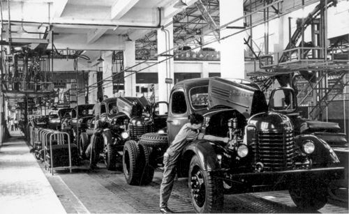
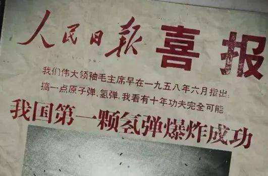
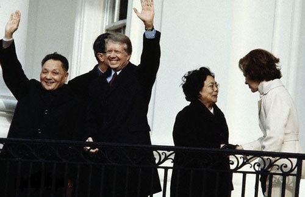
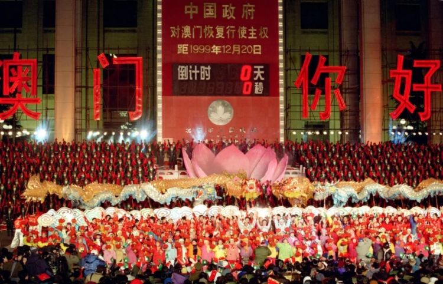
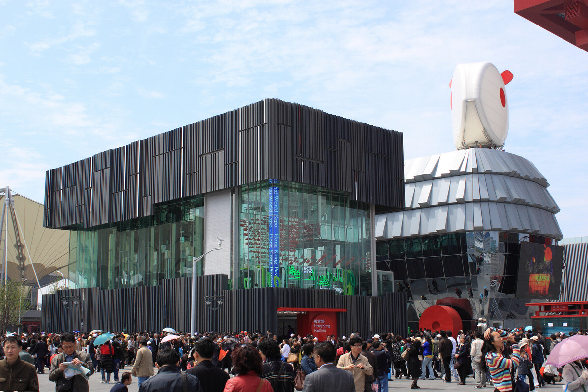
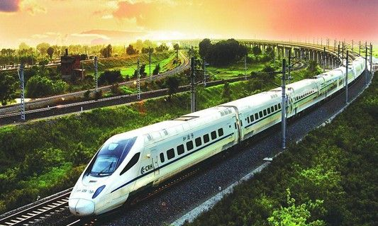
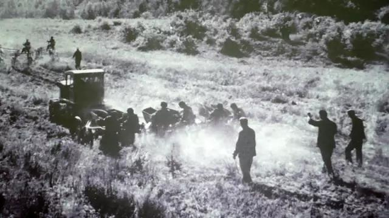

感受开国大典
1949年10月1日，中华人民共和国中央人民政府成立典礼，即开国大典，在北京天安门广场隆重举行。下午3点，
中央人民政府委员会秘书长林伯渠宣布中央人民政府成立典礼开始。在代国歌《义勇军进行曲》的雄壮旋律中，
毛泽东按动电钮，新中国第一面五星红旗冉冉升起。广场上，54门礼炮齐鸣28响，象征着中国共产党领导全国54个民族艰苦奋
斗28年的光辉历程。阅兵式开始，朱德总司令在阅兵总指挥聂荣臻陪同下，乘敞篷汽车检阅部队。
中国人民解放军受阅部队列成方阵，迈着威武雄壮的步伐，由东向西分列式
通过天安门广场。与此同时，刚刚组建的人
民解放军空军战斗机、轰炸机，凌空掠过天安门广
场，接受检阅。中国人民经过一百多年的英勇斗争，终于推翻了帝国主义、
封建主义和官僚资
本主义的统治，取得新民主主义革命的胜利，中国人民从此站起来了，成了国家的主人。
中国
的历史进入一个新纪元。

“一五“再创辉煌
新中国集中主要力量，进行以苏联帮助中国设计的156个建设项目为中心、由限额以上的694个建设项目组成的工业建设。用现代化的生产技术装备农业；生产现代化的武器，加强国防建设；不断增加农业和工业消费品的生产，保证人民生活水平的不断提高。根据1953年中国共产党过渡时期的总路线，一五时期国家通过三大改造把私有经济纳入计划轨道，支持和保证国家工业化建设。1953年开始，农村开始进行农业合作化，合作化开 始之初是以农民自愿为原则，渐进推进。
中国第一座汽车制造厂--长春第一汽车制造厂也在这一时期建成投产。陈镜开在举重比赛中举起133公斤，中国运动员第一次打破世界纪录。沈阳第一飞机制造厂，也成功运行。这是中国人民共同努力创造的奇迹！
“巨响”震动世界
1964年10月16日下午3时，中国第一颗原子弹爆炸成功了，很快这个消息就传遍了世界。当时各国都十分震惊，因为他们知道，当时中国一穷二白，所以苏联专家也才会拍着胸脯保证，中国二十年都造不出原子弹。但是，在中国人的共同努力下，完成了这个不可能的奇迹。
从原子弹到氢弹，美国用了7年4个月，苏联用了4年，英国用4年7个月，法国用了8年，而中国只用了两年8个月。
就这个数据，就值得我们骄傲。感恩老一辈科学家！如果从国内国外两个方面来谈的话，我们国家的科学在很多方面都还在别人的后面，特别是和一些发达国家来比较的时候。但是我们的科学精神并不是没有，而是要有一双发现的眼睛，然后脚踏实地的去按规律办事。拒绝潜规则，弘扬正能量。

改革开放，开启新的征途
在“一五”计划的基础上，新中国在在初期取得了一些成就，建立起了自己独立的重工业体系，培养了一批人才，教育、医疗系统得到建立。
中国大陆逐步开始市场经济的尝试，经过最初十年的犹豫和争论，最终由邓统一了思想，基本思路是由地方先行先试进行试点，创立经济特区来进行经济建设的实验，然后将有益经
验提炼以后向全国推广成为国家政策。这段时间，正好遇上世界经济结构调整，中国大陆
利用劳动力成本的优势吸引了大量外资，经济开始腾飞，人民生活水平开始得到巨大改善。
深圳人民在邓小平理论和党的基本路线指引下，敢创、敢干、敢探索，形成了“开拓、创新、
团结、奉献”的深圳精神。经过１８年来的发展，两个文明建设取得了瞩目成就。
冰川消融，两国共进退
中美建交，结束了长期的对峙，开始了两国关系的新阶段，提高了两国的战略地位，改变了国际战略格局，对亚太地区的和平与稳定有重大的意义，有利于两国的经济、贸易、科技、文化、金融等各方面的交流与发展，中国处于美苏之间的关键性制衡地位，使中国战略地位空前提高。
中美建交是中华人民共和国与西方关系突破的标志性大事。30年来，在两国几代领导人和各界有识之士的共同努力下，中美关系取得了历史性发展，双方在广泛领域的交流合作卓有成效，两国人民的了解和友谊与日俱增，中美关系的战略意义和全球影响更加突出。
中美建交不是一国的突然决定，而是历史的必然，在日渐变强的中国面前，西方国家已经无法无视他的存在，即使想对他进行封锁、打压，最后却不得不与他进行贸易来往。而中国在长久的被敌对状态下，是中国人，努力拼搏，在困境中谋求发展，最终不断壮大。这就是中华民族的精神，无论何时，无论何地，总是散发着光彩。
离家的孩子重回母亲怀抱

中华人民共和国中央军事委员会主席江泽民发布《中国人民解放军驻香港部队进驻香港特别行政区命令》，中国人民解放军驻香港部队进驻香港特别行政区，于1997年7月1日零时开始履行防务职责。6月30日午夜-7月1日凌晨，中英两国政府香港政权交接的仪式在香港隆重举行。中华人民共和国主席江泽民庄严宣告：中国对香港恢复行使主权；中华人民共和国香港特别行政区正式成立。1时30分，中华人民共和国香港特别行政区成立暨特区政府宣誓就职仪式在香港会议展览中心新翼七楼隆重举行。
1999年12月20日零时，中华人民共和国国旗和中华人民共和国澳门特别行政区区旗在门文化中心花园馆升起。一声呐喊在澳门上空回荡。母亲，我回来了！澳门，这个漂泊400多年的游子重归祖国母亲的怀抱，铺一条大红的地毯，斟一杯醉人的美酒，奏一曲故乡的丝竹，道一声深情的祝福。那一夜，中国未眠；那一夜，雄壮的《义勇军进行曲》庄严奏响，鲜艳的五星红旗，在翠绿的澳门特别行政区区旗的陪伴下，冉冉升起！

在北京燃烧的奥运圣火
2008年奥运会是现代奥运会第3次在亚洲登陆，是第一次在发展中国家举行，也是第1次在世界四大文明古国举办。经过改革开放20多年的发展，我国经济有了长足发展，社会主义市场经济体制已经基本建立，政治局势稳定，人民生活水平逐步提高，我国的国际地位和威望日益提升。这是首次在国内举办奥运会，全国人民都极为关注。在运动健儿拼搏的汗水中，在全国人民的祝福下，奥运会画上了圆满的句号。这是一个结束，也是一个开始，这是在中国举报的第一次奥运会，但绝不是最后一次！
2008年北京奥运会使中国日益自信，大国心态和风范亦得到塑造和锤炼。北京奥运会
圆了中国的百年梦想，使中国更加自信，更加开放，更加进步。北京奥运会后的中国，更
加致力于和平的发展、开放的发展、合作的发展，致力于同世界各国人民一道，建设持久和
平、共同繁荣的和谐世界。
在城市进行的“小世界”
当绚丽的礼花在黄浦江畔升起绽放，这个城市和整个国家为之精心准备了8年之久的2010年上海世界博览会终于拉开了帷幕。
走在上海这做城市中，看着一座座世界各国在此处建设的国家馆，不由发出感叹：“世界原来真的就这么小。”感受着各国的建筑，学习各国的科技知识。城市的改变了生活的细节，城市创造了一个又一个美丽。城市，让生活更美好！
这既是第一次在发展中国家举办的世博会，也是历史上规模最大的一次世博盛会。在未来的半年里，预计将有来自全球和全国各地的7000万人次游客在横跨上海母亲河的世博园里，一览这个时代技术进步的最新成就、人类多元的生活方式和人类文明的未来期许。世博会这个窗口不仅可以让国人“足不出沪”、“零距离”地感受世界各国的文化与科技，更为重要的是世博会还带来了一次千载难逢的促进中外交流的机遇。
苦心钻研，只为救世济人
屠呦呦是第一位获得诺贝尔科学奖项的中国本土科学家、第一位获得诺贝尔生理医学奖的华人科学家。是中国医学界迄今为止获得的最高奖项，也是中医药成果获得的最高奖项。
她获得诺贝尔奖，是中西医完美结合的成果。一直以来，国内外关于中西医的争论持续不断，容易犯厚此薄
彼的错误。事实上，中西医都是人类的文明成果，对人类健康的贡献都是有目共睹的。今天，
我们要做的是，充分认识中西医各自的价值，将两者结合起来，而不是一味地作没有意义的
辩论。
她获得诺贝尔奖，是精神之光爆发的巨大力量。40多年来，青蒿素成为世界卫生组
织推荐的一线抗疟药，挽救了全球数百万人的生命。40年后，屠呦呦终
于得到诺贝尔奖的
桂冠。这背后，屠呦呦等人付出了艰辛的努力，当她成为85岁的老太太时，因为用一株小草
改变了世界而赢得了整个人类的赞誉。
新时代的工程——“一带一路”
2015年10月19日，“一带一路”国家统计发展会议在陕西西安召开，国家统计局前局长王保安在会上倡议，“一带一路”沿线国家要进一步加强政府统计交流与合作，努力为各国可持续发展提供准确、可靠的统计数据。王保安指出，信息互联互通是经济互联共赢的基础，“一带一路”行动，将推动政府间统计合作和信息交流，为务实合作、互利共赢提供决策依据和支撑
中国改革开放是当今世界最大的创新，“一带一路”作为全方位对外开放战略，正在以经济走廊理论、经济带理论、21世纪的国际合作理论等创新经济发展理论、区域合作理论、全球化理论。“一带一路”强调共商、共建、共享原则，超越了马歇尔计划、对外援助以及走出去战略，给21世纪的国际合作带来新的理念。“丝绸之路经济带”概念，不同于历史上所出现的各类“经济区”与“经济联盟”，同以上两者相比，经济带具有灵活性高、适用性广以及可操作性强的特点，各国都是平等的参与者，本着自愿参与，协同推进的原则，发扬古丝绸之路兼容并包的精神。
中国的“翅膀”—— C919
如果不飞翔，怎知蓝天的辽阔？如果不做“极限挑战”，怎能验证飞机的性能？让中国的大飞机飞上蓝天，是国家的意志，人民的意志。
C919大型客机，全称COMAC C919，是中国首款按照最新国际适航标准，具有自主知识产权的干线民用飞机。C919就是一块敲门砖。它帮助中国的航 空工业挤进世界航空工业的一个市场，这就是它的最大意义。因为这意味着我们国产大飞机终于实现了从无到有，有小到大，有弱到强跨越式发展，我们终于不必动辄花费数百亿美金或者欧元，购买波音飞机或者空中客车了。大飞机技术的突破，预示着中国的航空制造业迈入了强国的行列，也为中国军事力量提供了条件。中国展示出来的实力将极大的激发群众的向心力和凝聚力。在中国共产党的带领下，劈风斩浪，扬帆远航，为百年中华民族复兴的中国梦，添上了浓重的一笔。
创造生命的奇迹
塞罕坝自古就是一处森林茂密，鸟兽栖息的美地，在很多史书上面都有相关记载，辽、金时期更是被称作“千里松林”。但我们今天看到的塞罕坝，并不是从古代延续下来的，而是近半个世纪以来刚刚建成的。在这中间，有一个时期的塞罕坝是黄沙遍地，寸草不生的。
日本侵略者的到来，塞罕坝遭受劫难，原本在开垦中保留下来的树木被砍伐一空，再加上连年的火灾，原本水草丰盛，鸟兽遍地的塞罕坝，再也难以看到一棵树了。失去了森林的塞罕坝，从原本的美地，变成了一个恶地。为了改造塞罕坝，1962年林业部在塞罕坝建立了机械林场，选拔一批有能力，有热情的青年知识分子上坝造林。经过几代人的不懈努力，终于再次在塞罕坝建起了万亩森林，使塞罕坝恢复了往日的风采。
从荒丘沙地到万亩森林，这是一个中国的奇迹。我们欣赏它，不仅仅是因为它万亩森林，风景如画，还因为它代表了一种精神，一种中华儿女不怕苦，不怕累，通过双手改造自然的斗争精神。正是有了这种精神，才能用短短几十年的时间，将寸草不生的塞罕坝改造成现在的一个著名旅游景点，我相信塞罕坝的明天会越来越美好。